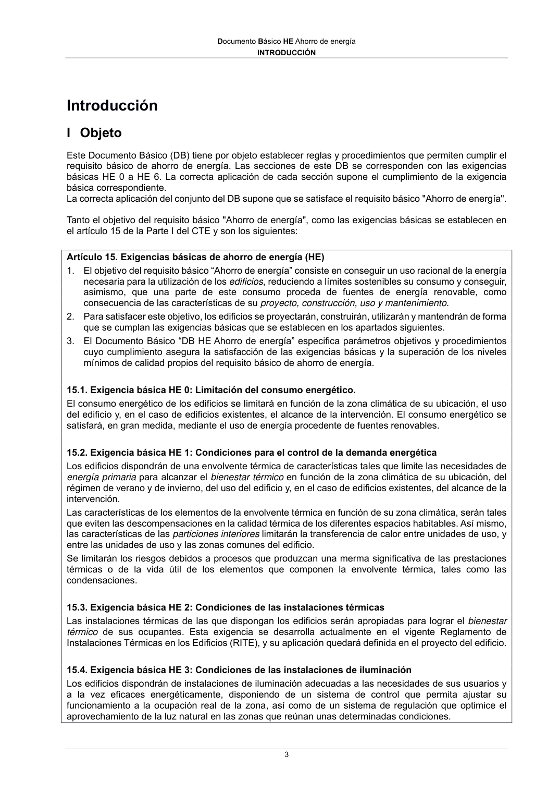

DB-HE Ahorro de energía · edición 2022-06-14 · capa oficial
Documento DB-HE-oficial · SHA-256 del PDF 7f890bd495552e979f83f72c5f5c7b642e745911a8e343a7b5b73023ce0e1f05
Copia fiel del PDF fuente · Fuente oficial
Ficha de la disposición en la fuente oficial
Formatos: JSON del segmento · Markdown
disposiciones: - Real Decreto 1371/2007 de 19 de octubre (BOE 23/10/2007) - Corrección de errores y erratas del Real Decreto 314/2006, de 17 de marzo (BOE 25/01/2008) - Orden FOM /1635/2013 del 10 de septiembre por el que se actualiza el Documento Básico DB-HE (BOE 12/09/2013) - Corrección de errores y erratas de la Orden FOM / 1635/2013 del 10 de septiembre (BOE 08/11/2013) - Real Decreto 732/2019, de 20 de diciembre (BOE 27/12/2019) - Real Decreto 450/2022, de 14 de junio (BOE 15/06/2022) - Corrección de errores del Real Decreto 450/2022 del 14 de junio (BOE 02/02/2023) Documento Básico consolidado Esta versión del Documento Básico es un texto consolidado a partir de las sucesivas modificaciones que se han realizado en el Documento Básico a través de las disposiciones publicadas en el BOE. Este texto consolidado no tiene valor jurídico. Documento Básico HE Ahorro de energía INTRODUCCIÓN 3
